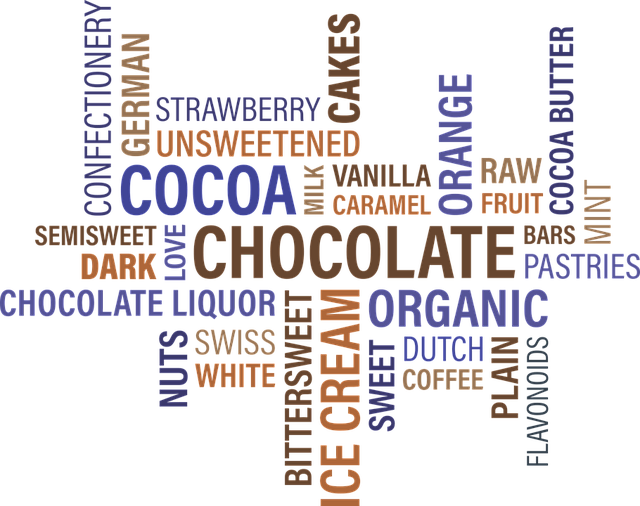

Good Food Good Health - Anxiety and Stress
Anxiety is not a new thing to us all and, in reality, everyone needs to feel anxious at times because of this natural emotion the body produces a reaction that releases adrenaline - the hormone stimulant that we have into our bodies.
Adrenaline is vitally important in encouraging us to take on difficult and unpleasant tasks, assisting us to deal with stressful situations.
Our lives appear to be controlled by moving from one emotional issue to the next. it is often thought to be normal.
This is another reason that food that is in good health must be a part of everyone's daily regimen, as it helps our immune system to deal with the strain and stress put to our systems.
The majority of anxiety sufferers have been a result of something we know about - for instance, the upcoming exam or an important interview , etc and creates different amounts of stress based on the person.
It can be a problem when fear or anxiety is felt in the absence of a reason, or when the situation is deemed to be to be more hazardous than is necessary.
The way we handle it all depends on the individual and their perspective on life and personality.
While anxiety is a state of mind physical symptoms can also be caused due to anxiety. It was previously thought that the symptoms were just 'in the mind'. However, it has been proved that some individuals actually suffer from pain and eventually become sick because of the negative effects.
The most commonly reported symptom is obviously the need to frequently urinate, which I am sure that we have all had, I certainly have prior to flying.
The most commonly reported sign of chronic anxiety is discomfort in the back, the chest, head and abdomen. A few sufferers experience nauseas and even vomit. Dizziness, diarrhoea and muscle tension are other common issues.
In extreme instances, panic attacks may occur that typically involve sweating profusely as well as palpitations, and unusually deep breathing.
For some sufferers with chronic conditions, it's a constant cycle. Patients can be stressed out about having anxiety or have recurrent attacks which can be experienced over years. This is referred to as chronic anxiety. In these instances, medical attention is required.
Sleepiness is another well-known side consequence, and this can only increase the stress experienced by those suffering from it as they contemplate the issue that causes anxiety, and making the smallest of issues appear to be like a major obstacle.
The most effective way to help your body to cope and maintain your health in good shape is to ensure that you are eating healthy food. A diet that is rich in fruits and vegetables, raw as well as salads and lots of protein will provide you with an ideal balance and will help in keeping your immunity in top shape.
Carrots, in particular, the juice of carrots is believed to possess an uplifting effect over the body's nervous system. The camomile tea is another one that is a fan favorite.
A variety of vitamins are thought to aid in healing, Vitamins B and C are believed to aid in the battle against stress and anxiety, as well as the function of central nervous systems is thought to be improved by Vitamin E along with magnesium, calcium and zinc minerals.
Therefore, by eating a diverse diet, These minerals and vitamins should be easily accessible for healthy and nutritious food. attained, and you can take nutritional supplements in conjunction with your doctor. read more
Another self-help option to beat anxiety is to practice breathing exercises. Breathing exercises that are controlled can will help you relax and calm. If you try Visualisation Therapy which I utilize for relaxation, you'll discover how simple to utilize and how it has remarkable effects on your life and your perspective on your life.
Many who are suffering from anxiety are prone to dwell on worries and issues that make them sick rather than being optimistic and this is a problem that must be dealt with. Make an effort to adopt an optimistic mindset and show kindness to yourself, however, ensure that you don't get over indulgent.
Chocolate is a great food with a wonderful feel, and a bit of your favorite flavor is beneficial, and is drinking a glass of juice help lift your spirits. However, making use of this as a crutch or consuming too much is not without its own consequences.

Aromatherapy is another great way to boost your mood, and we all know that nice scents can boost your mood Essential oils can be an excellent method to achieve this.
A blend of sandalwood, lavender, basil and clary sage can assist in reducing anxiety and panic However, if you have a headaches due to anxiety, or muscle tension, add marjoram and camomile essential oils.
Try using these oils on a burner while taking a refreshing bath to relieve yourself of the stress of your day.
Music is a excellent method to help us to relax. Why not listen to some music on your private stereo, or an MP3 while waiting for an appointment or other event that makes you feel nervous.
Music that we like generally improves our mood and sometimes , by listening to natural sounds such as whales, water and the like can have a positive impact.
The root to your stress is crucial in order to ease the burden and discussing your concerns with a trusted friend could be very beneficial. In more serious cases, psychiatrists can provide assistance.
I think that our outside perspective on life actually can aid or worsen our battle with anxiety all through our lives. by eating a balanced diet for healthy living and maintaining an optimistic mindset can aid in fighting the signs and maintain a strong immune system that keeps our bodies in top health